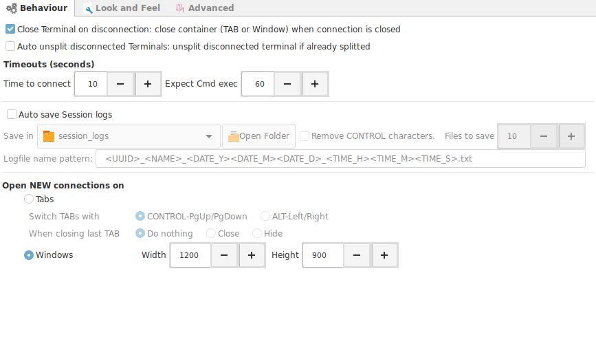

Options
This options apply to all terminals. If you need a particular terminal to behave differently is best to configure the look and feel options at the connection level.

- Close terminal on disconnect
- Enabled. The terminal will close immediately after : you type exit, a network error, disconnection from the server.
- Disabled. You will be asked if you really want to close the terminal.
- Auto unsplit disconnected terminals : Same concept as previous option but with slit terminal.
-
Timeouts
- Time to connect : How many seconds to wait to establish new connection.
- Expect CMD exec : Time to wait for an expect sequence to execute.
-
Auto save Session logs : When enabled, will save a log the complete session in a file for all established connections.
- Save in : Location to save logs
- Remove control characters : Will clean the logs from all terminal control characters. Just leave a clean text output.
- Pattern for the filename
- Open new connections on
- Tabs
- Set the key combination to switch tabs.
- Set the action to perform when closing the last tab.
- Windows
- Set predefined Width and Height.
- Tabs